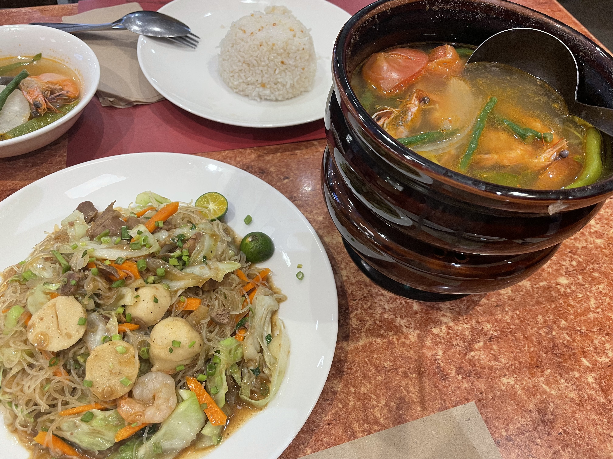

世界遺産のサン・アングスティング教会
2023/01/08 フィリピン

フィリピンの世界遺産は？と聞かれても？？？となってしまう中、マニラ市街に世界遺産がありました！教会の中に入って見ると、天井がとても綺麗で思わず見惚れてしまいます。マニラに行く時は是非行ってみてください。教会だけじゃなくて周辺の建物がスペイン調でフィリピンの異文化の中にさらに異文化があって、見ていて面白くてオススメですよ！
マニラから３時間のホテルのプライベートビーチ
2023/01/10 フィリピン

セブやエルニドまでの予算は無いけどちょっぴりビーチも楽しめたら良いな！って思っていたら、スービックの方に日帰りOKのホテルプライベートビーチ、カヤマンビーチを発見。入場料500ペソでこの景色とビーチは嬉し過ぎます！レストランもあって、フィリピン料理やフィッシュアンドチップスやピザをいただく事も出来ます。海に入ると魚すぐ近くで泳いでいたりで小さいお子さんも楽しそうに遊んでました。車で3時間圏内にこの海はズルい！贅沢ですよね！
フィリピン料理と言えば、シニガンとビーフン
2023/01/15 フィリピン
フィリピンに来たら食べたくて仕方がなかった、シニガンとビーフン。ここぞとばかりこの2点を食べていたのですが、常夏のフィリピン。汗をかくからなのか味付けが濃い。濃過ぎるのです！！！喉が渇くし浮腫んだりもしますが、シニガンってスープは酸っぱいのが好きな私には好物であり、食文化の違いを堪能し楽しみながらいただきました。